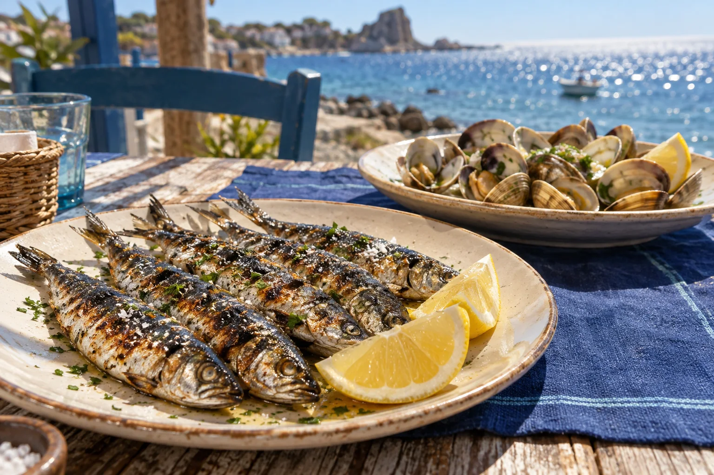
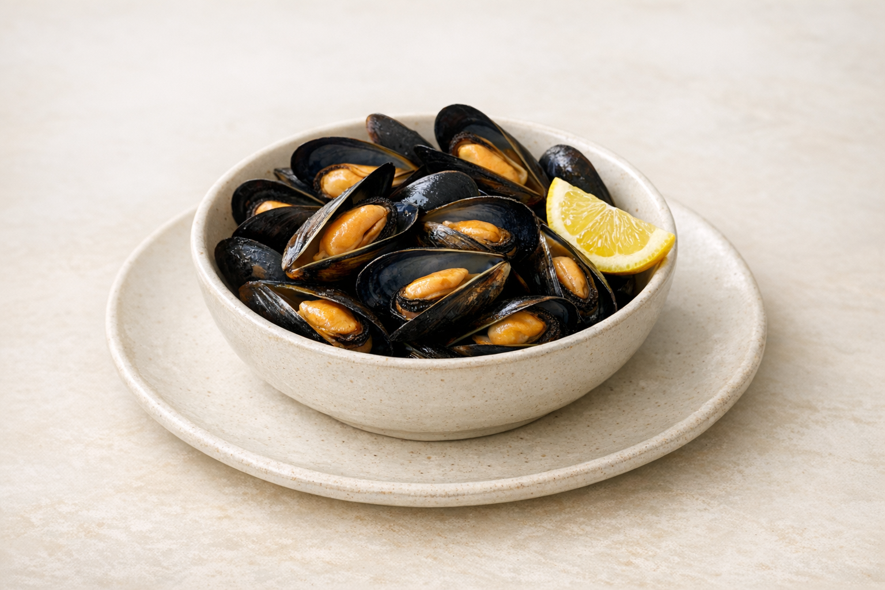

01
Para comenzar
Espárragos blancos con mahonesa
13.50 €Ensalada de queso de cabra, frutos rojos, nueces garrapiñadas
14.00 €Ensalada de hojas (mix de lechugas, tomate cherry, cebolla morada, zanahoria, dressing)
8.00 €«La primavera tomatera» (tomates RAF, castellano, pera, huevo de toro, cherry rojo y amarillo)
10.00 €Ensalada rusa
11.00 €Ensalada de pimientos
9.00 €Boquerones en vinagre
12.00 €Anchoas (unidad)
3.00 €Bastoncitos de berenjenas
8.00 €Croquetas variadas (3 carabinero, 3 chipirón en su tinta)
10.00 €Pata de pulpo a la plancha con crema de patata
19.00 €Revuelto de langostinos, ajetes y jamón serrano
12.75 €Serranito de melva
7.50 €Espeto de sardinas
7.00 €Espeto de gambones
15.00 €Sopa de mariscos
10.00 €
02
Pescados y mariscos
Almejas
12.00 €Almejas marinera
13.50 €Coquinas
13.00 €Mejillones al vapor
10.00 €Mejillones marinera
11.50 €Conchas finas (unidad)
4.00 €Conchas finas a la plancha (unidad)
4.50 €Vieiras al pil pil (unidad)
4.50 €Gamba blanca cocidas
20.00 €Gamba blanca plancha
22.00 €Gamba roja cocidas
28.00 €Gamba roja plancha
30.00 €Bogavante a la plancha
45.00 €Calamar nacional (plancha, frito o espetado)
60.00 €Dorada (a la espalda o espetada)
60.00 €Lubina (a la espalda o espetada)
60.00 €Pargo / Urta (a la sal o espetado)
80.00 €Lenguado nacional a la plancha
9.00 €Langostinos pil pil
13.00 €Albóndigas de choco y gamba roja en salsa marinera con patatas fritas
Por confirmarBrocheta de rosada y verduras
19.00 €Parrillada de mariscos
80.00 €Rosada plancha
16.00 €